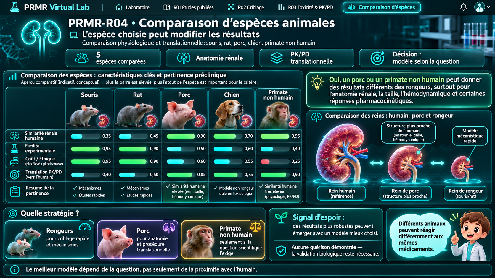

Laboratoire 3D : espèces, molécules et physiologie
Un tableau de bord manipulable pour étudier comment le choix de l'animal et son état physiologique influencent les hypothèses de pharmacocinétique et de pharmacodynamie. Les structures moléculaires 3D sont générées depuis des conformères RDKit. Les organes 3D sont des schémas conceptuels.
Les illustrations exactes, intégrées au laboratoire
Sélectionner une espèce pour afficher son affiche originale, puis modifier ses paramètres dans le simulateur ci-dessous.

Affiche de présentation graphique. Les scores représentés dans l'image ne sont pas des résultats expérimentaux et ne doivent pas être interprétés comme des probabilités. Les analyses numériques validables se trouvent dans le simulateur.


Rein : mécanismes et lésions
3D conceptuelle · faire pivoterOrganisme sélectionné
3D éducativeIndication expérimentale
Source de l'espèceExpositions PK simulées
Non calibrées chez l'animalExposition médiane relative sous les hypothèses de transfert R03. Les molécules et leurs métabolites ne partagent pas un seuil de toxicité comparable.
Balance risque / bénéfice
Preuve limitéeÉvaluation en cours...
Ancrages humains : évolution rénale
Données de la littératureModification de l'AUC selon la sévérité rénale chez l'humain, non une courbe animale. Changer la maladie ou l'espèce n'altère pas ces observations historiques.
PD / Engagement de SGLT2
Modèle Emax illustratifCible et disponibilité des paramètres selon l'espèce.
Atelier moléculaire : structures 2D / conformères 3D
RDKit · pivoter et sélectionnerQuatre molécules existantes. Les conformères 3D ont été construits par RDKit ETKDG puis optimisés par MMFF. Ces structures ne représentent ni des liaisons moléculaires entre médicaments ni une interaction mesurée avec leurs cibles.
Système rénine-angiotensine
Structure chimique et identifiant PubChem.
Fiche chimique PubChemLes sphères colorées représentent des atomes (C, O, N, Cl). La caméra tourne sur un conformère stable calculé ; aucun mouvement des atomes n'est une réaction chimique simulée.
Comparaison explicative des six espèces
Faits qualitatifs, pas notes fictives| Espèce | Structure rénale | Intérêt du modèle | PK des triples PRMR |
|---|
Le porc est pertinent pour l'architecture multipapillaire, la perfusion et certains modèles de néphropathie. Le chien est un modèle non-rongeur de toxicologie, non un substitut universel du rein humain. Un primate non humain n'est justifié que si la question ne peut pas être résolue autrement. Aucune de ces espèces ne dispose ici d'une PK validée des associations R02-A/R02-B.
Parcours scientifique et traçabilité
Étude numérique réellement exécutéeVersion simplifiée : chaque espèce a un organisme différent. L'ordinateur montre les informations disponibles et les questions importantes, mais il ne peut pas dire combien d'animaux seront guéris ou rendus malades sans véritables expériences.